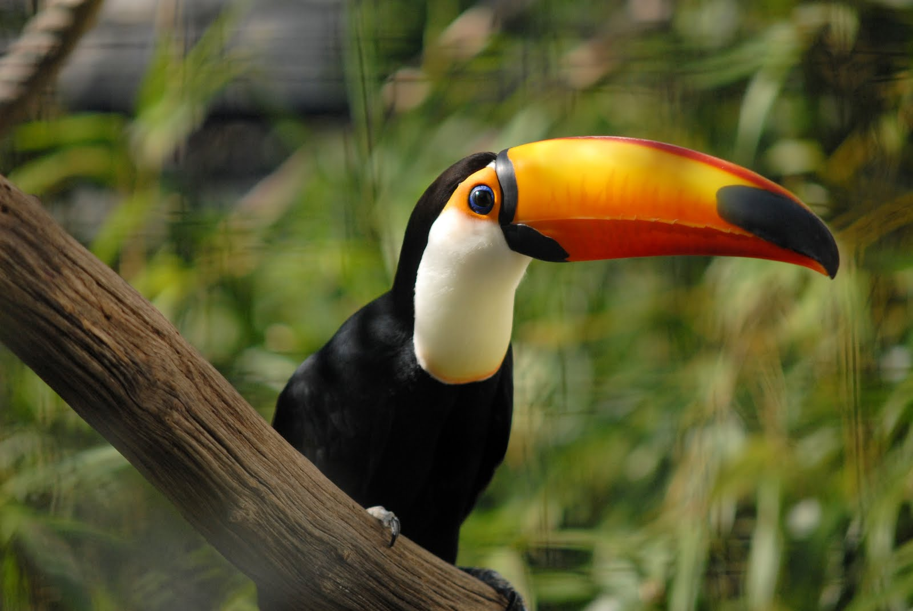

Tucano
O bico do tucano ajuda a regular a temperatura do corpo, além de ser um atrativo visual para parceiros durante o acasalamento.
Papagaio
.jpg)
Papagaios são aves conhecidas por sua plumagem colorida e habilidades de imitação vocal.
Eles têm bicos fortes e garras adaptadas para agarrar e manipular objetos.
Panda

O panda gigante é um mamífero grande, com uma pelagem distinta branca e preta.
Tem um corpo robusto e um rosto redondo com manchas escuras ao redor dos olhos.
Lagarto

Lagartos são répteis com corpos alongados, caudas geralmente longas e pele coberta por escamas.
Existem muitas espécies com diferentes tamanhos e padrões de cor.
Coiote

O coiote é um mamífero carnívoro da família dos canídeos, semelhante a um lobo pequeno, com uma pelagem que varia do cinza ao marrom.
Tem uma forma esguia e orelhas eretas.
Baleia

As baleias são grandes mamíferos marinhos que podem variar significativamente em tamanho, desde a pequena baleia-minúscula até a enorme baleia-azul.
Elas têm corpos adaptados para a vida aquática, com nadadeiras e caudas largas.